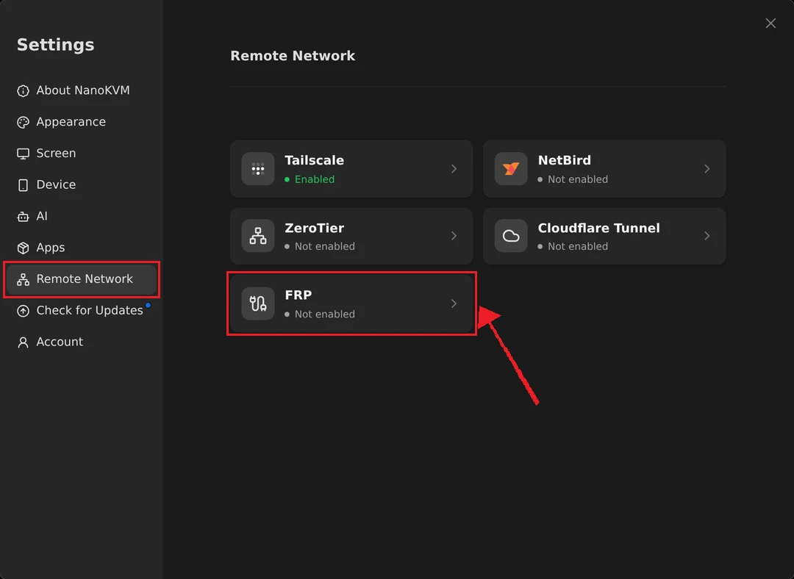
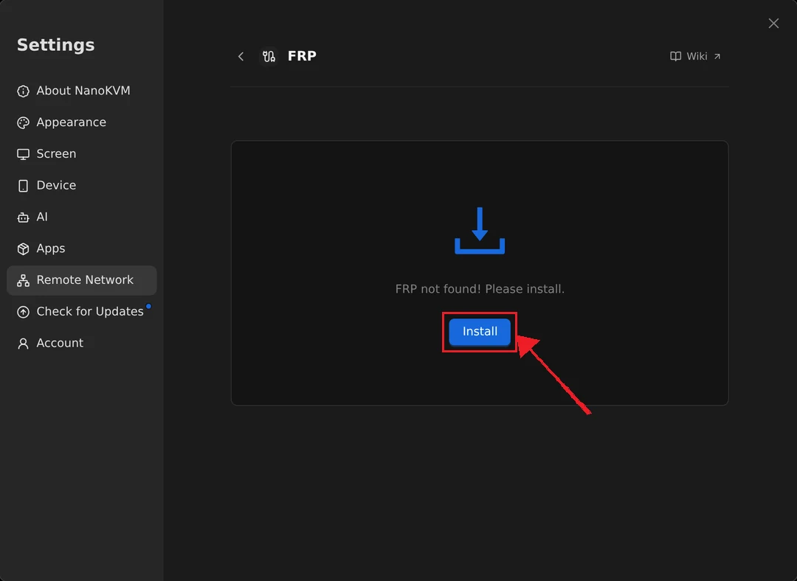
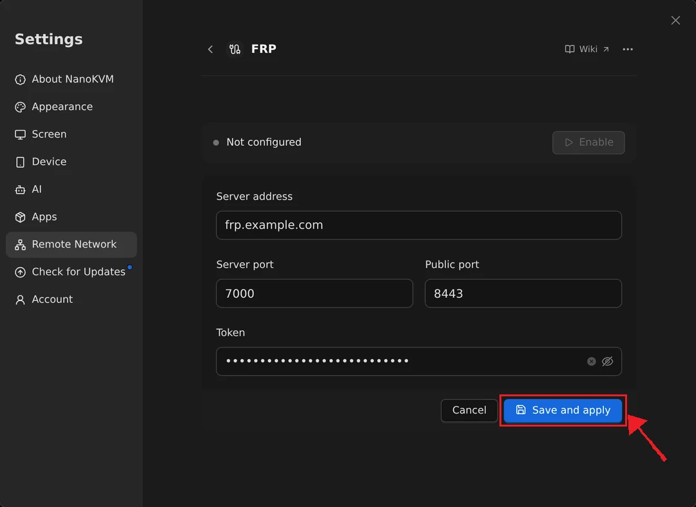
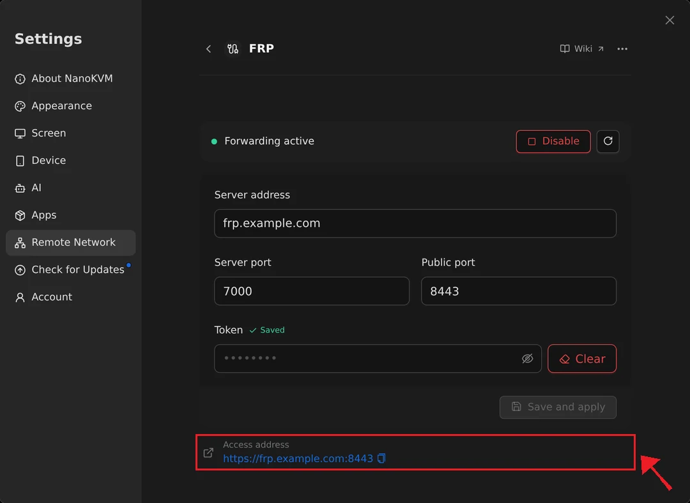

English
Englishfrp
What frp does
frp is an intranet penetration tool. It forwards a NanoKVM Go without a public IP address to a server that has one. Once configured, you open the server address from anywhere and control NanoKVM Go just as you would on the local network.
frp has two parts:
frps: the server, running on your own public server;frpc: the client, running on NanoKVM Go.
Remote PC or phone
|
| Open https://frp.example.com:8443
v
Public server (frps) <----- frpc connects out ----- NanoKVM Go
NanoKVM Go ships with the FRP client built in. Installing it, entering the server details, and enabling or disabling the tunnel all happen in the web interface. You do not need SSH access, and you do not download anything by hand. Only frps on the public server has to be installed manually, as described below.
The public server is a Linux cloud server that you provide. NanoKVM Go only runs the client and connects out to it, so the local network needs no port forwarding.
Exposing NanoKVM Go to the Internet increases the risk of scanning, password guessing, and attacks. Set a strong password for NanoKVM Go first, and give frps a random token. The basic example forwards the HTTPS service built into NanoKVM Go, but the device certificate is normally self-signed, so browsers may warn that it is not trusted. With a domain you can serve a trusted certificate, as described in "Serve a domain with HTTPS (optional)" below. If you would rather not expose public ports, use a virtual network instead: Tailscale, ZeroTier, or NetBird.
Before you start
Prepare the following:
- a Linux server with a public IPv4 address;
- a NanoKVM Go with Internet access and the latest application version (
FRPappears inSettings>Remote Networkon current builds); - GitHub access from NanoKVM Go, because the client installer downloads its package from GitHub;
- permission to modify the cloud security group and the server firewall;
- an frp token that is hard to guess.
This document uses the following example values:
| Item | Example | Notes |
|---|---|---|
| Public server address | frp.example.com (example IP: 203.0.113.10) |
Entered in NanoKVM Go |
| frps port | 7000 |
Used by the client to reach the server |
| Public port | 8443 |
Used by the browser to reach NanoKVM Go |
| Token | replace_with_a_strong_token |
Must match on both sides |
203.0.113.10 and frp.example.com are documentation examples and cannot be used as-is. If you have no domain, enter your server's public IP in NanoKVM Go instead. Replace every address, port, and token in this document with your own values.
Install frps on the public server
Download frp
Check the CPU architecture of the server:
uname -m
Open frp Releases and pick the Linux package that matches the server. The client inside NanoKVM Go is frp 0.71.0, so install the same version on the public server; mismatched versions may fail to connect.
Common architecture mappings:
uname -m output |
frp package architecture |
|---|---|
x86_64 |
linux_amd64 |
aarch64, arm64 |
linux_arm64 |
armv7l |
linux_arm_hf |
| Older ARM devices such as ARMv5 | linux_arm |
riscv64 |
linux_riscv64 |
You can download 0.71.0 directly from the release page:
- frp 0.71.0 release
- Linux AMD64 package
- Linux ARM64 package
- Linux ARMv7 hard-float package
- Linux RISC-V 64 package
Most cloud servers are x86_64. If uname -m prints x86_64, download and install with:
wget https://github.com/fatedier/frp/releases/download/v0.71.0/frp_0.71.0_linux_amd64.tar.gz
tar -xzf frp_0.71.0_linux_amd64.tar.gz
cd frp_0.71.0_linux_amd64
sudo install -m 755 frps /usr/local/bin/frps
sudo install -m 755 frps /usr/local/bin/frps copies frps to /usr/local/bin/frps with mode 755: everyone can execute it, and only the owner can modify it.
For other architectures, download the matching package from the table and replace the archive name and extraction directory in the commands above.
Confirm that frps runs:
/usr/local/bin/frps --version
Create the frps configuration
Create the configuration directory:
sudo mkdir -p /etc/frp
Create /etc/frp/frps.toml:
bindPort = 7000
auth.method = "token"
auth.token = "replace_with_a_strong_token"
Only two settings are involved:
bindPort: the portfrpslistens on, which the client connects to;auth.token: the token used to authenticate clients. It must match what you enter in NanoKVM Go.
The NanoKVM Go client always uses a TCP proxy that maps the device's local HTTPS service to a public port, so the server does not need
vhostHTTPPortorvhostHTTPSPort.
Replace auth.token with a strong random value. Generate one on the public server:
openssl rand -hex 32
The token only authenticates the client. It is not the NanoKVM Go login password, and it is not the HTTPS certificate used by the browser.
Start frps
Start it in the foreground first so you can read the logs:
sudo /usr/local/bin/frps -c /etc/frp/frps.toml
If nothing is reported, press Ctrl+C to stop the test. Running in the foreground works on every Linux distribution, but frps stops when the terminal closes, so long-term use needs a service.
Check the init system
Print the program that PID 1 refers to:
ps -p 1 -o comm=
Choose the startup method from the output:
| Output example | Startup method |
|---|---|
systemd |
systemd |
Anything else, such as init |
The distribution's own init system; see the SysV init section below |
Whether systemd is available depends on PID 1 being
systemd. The presence of thesystemctlcommand does not mean the system booted with systemd.
With systemd
Use these commands only when ps -p 1 -o comm= prints systemd.
Create /etc/systemd/system/frps.service:
[Unit]
Description=frp server
After=network-online.target
Wants=network-online.target
[Service]
Type=simple
ExecStart=/usr/local/bin/frps -c /etc/frp/frps.toml
Restart=on-failure
RestartSec=5s
[Install]
WantedBy=multi-user.target
Reload, enable, and start the service:
sudo systemctl daemon-reload
sudo systemctl enable --now frps
sudo systemctl status frps
active (running) means frps is up. Follow the logs with:
sudo journalctl -u frps -f
With SysV init
If the system uses SysV init and start-stop-daemon is available, create /etc/init.d/frps:
#!/bin/sh
DAEMON=/usr/local/bin/frps
CONFIG=/etc/frp/frps.toml
PIDFILE=/var/run/frps.pid
case "$1" in
start)
if [ -f "$PIDFILE" ] && kill -0 "$(cat "$PIDFILE")" 2>/dev/null; then
echo "frps is already running"
exit 0
fi
echo "Starting frps"
start-stop-daemon --start --background --make-pidfile \
--pidfile "$PIDFILE" --exec "$DAEMON" -- -c "$CONFIG"
;;
stop)
echo "Stopping frps"
start-stop-daemon --stop --pidfile "$PIDFILE" --retry TERM/5/KILL/5
rm -f "$PIDFILE"
;;
restart)
"$0" stop
"$0" start
;;
status)
if [ -f "$PIDFILE" ] && kill -0 "$(cat "$PIDFILE")" 2>/dev/null; then
echo "frps is running"
else
echo "frps is not running"
exit 1
fi
;;
*)
echo "Usage: $0 {start|stop|restart|status}"
exit 1
;;
esac
Make it executable:
sudo chmod +x /etc/init.d/frps
On Debian, Ubuntu, and other SysV init systems that use update-rc.d, enable and start the service:
sudo update-rc.d frps defaults
sudo service frps start
sudo service frps status
If update-rc.d is not available, use the SysV init commands provided by your distribution.
When systemd is unavailable
If you see:
System has not been booted with systemd as init system (PID 1). Can't operate.
Failed to connect to bus: Host is down
the system did not boot with systemd, and systemctl cannot be used. Test frps in the foreground first:
sudo /usr/local/bin/frps -c /etc/frp/frps.toml
For long-term use, add a service configuration for the init system the distribution actually uses.
Open ports on the public server
Open these ports in the cloud security group and the system firewall:
7000/tcp: the frpc on NanoKVM Go connects to frps;8443/tcp: remote browsers reach NanoKVM Go (the example public port; you can choose another one).
Firewall tooling differs between distributions. Check what is installed first:
command -v ufw
command -v firewall-cmd
Pick the matching section below. Do not run commands for a tool that is not installed.
UFW
If command -v ufw prints a path, run:
sudo ufw allow 7000/tcp
sudo ufw allow 8443/tcp
sudo ufw status
If the shell reports ufw: command not found, UFW is not installed. UFW is not required to run frps; check for firewalld, another firewall, or the cloud security group instead.
firewalld
If command -v firewall-cmd prints a path, run:
sudo firewall-cmd --permanent --add-port=7000/tcp
sudo firewall-cmd --permanent --add-port=8443/tcp
sudo firewall-cmd --reload
sudo firewall-cmd --list-ports
Cloud security group
Alibaba Cloud, Huawei Cloud, Tencent Cloud, AWS, and similar providers keep a security group that is separate from the Linux firewall. Even when no UFW or firewalld is installed, add inbound rules in the cloud console:
| Protocol | Port | Source |
|---|---|---|
| TCP | 7000 |
The public IP of the network NanoKVM Go is on; use any source temporarily when it changes |
| TCP | 8443 |
The public IPs that need access to NanoKVM Go; use any source temporarily when they change |
After testing, narrow the sources to the addresses you actually use instead of leaving them open to the Internet.
Confirm that frps is listening on 7000:
sudo ss -lntp | grep ':7000'
8443only appears after the client on NanoKVM Go connects and registers its forwarding rule. Once it has,sudo ss -lntp | grep ':8443'shows frps listening on that port.
Configure FRP in the NanoKVM Go web interface
Everything below happens in the browser, with no SSH session. Log in to the NanoKVM Go web interface and open Settings > Remote Network.
Open the FRP settings
- Log in to the NanoKVM Go web interface and click the settings icon in the top toolbar;
- Select
Remote Networkin the left panel; - Click the
FRPcard.

Install the FRP client
On first use the page reports FRP not found! Please install.
- Click
Install; - Wait for the installation to finish. The package comes from GitHub, so the time depends on the device's network.

When it completes, the server form appears and the status reads Not configured. If installation fails, confirm that the device can reach GitHub and has enough free storage, then retry.
Fill in the server details
Fill the form as follows, then click Save and apply:
| Field | Value | Notes |
|---|---|---|
| Server address | frp.example.com or the public IP |
Domain or IP only: no https:// and no port |
| Server port | 7000 |
Must equal bindPort in frps.toml |
| Public port | 8443 |
Port used from the Internet; must differ from the server port |
| Token | replace_with_a_strong_token |
Must equal auth.token in frps.toml |

Common mistakes:
- the server address is the public server, not NanoKVM Go itself;
- the public port is what you open from the Internet, so allow it on the public server and keep it free of other services;
- if
frps.tomlsetsauth.token(recommended), the token must match exactly.
If two-factor authentication is enabled and FRP is included in its protection scope, installing, saving, and starting or stopping all ask for a verification code.
Enable forwarding
After saving, the status changes to Disabled. Click Enable to connect:
- Click
Enable; - The status briefly shows
Connecting; - On success it changes to
Forwarding active.
Once enabled, the client runs as a system service and starts automatically when NanoKVM Go reboots. Click Disable to disconnect, or the restart button next to the status to reconnect.
Copy the access address
When the tunnel is up, the page shows an Access address, for example:
https://frp.example.com:8443
Use the copy button next to it. This is the address you open from the Internet.

Status meanings:
| Status | Meaning | What to do |
|---|---|---|
Not installed |
The client is missing | Click Install |
Not configured |
Installed, but no server details saved | Fill in and save the form |
Disabled |
Configuration saved, client not running | Click Enable |
Connecting |
Started, connecting to frps | Wait; this normally takes seconds |
Forwarding active |
Connected and the proxy is running | Access it from the Internet |
Connection error |
Connection or proxy startup failed | See FAQ |
Reach NanoKVM Go from the Internet
To confirm the traffic really goes through the public server, switch your computer or phone to another network, such as a mobile hotspot, then:
- Open
https://frp.example.com:8443, the access address shown on the page; - Log in with the NanoKVM Go account and password;
- Test video, keyboard, mouse, and power control;
- Refresh the page and confirm that video and control still work.
TCP forwarding passes HTTPS and WebSocket traffic through unchanged, so no extra WebSocket configuration is needed. On the first visit the browser may warn about the certificate, because the device uses a self-signed one; continue once you have confirmed it is your own device.
If the page loads but video never connects, open Settings > Screen > Video mode and switch to H.264 Direct or H.265 Direct.
Serve a domain with HTTPS (optional)
When the access address uses the server IP and port directly, browsers warn about the certificate. With a domain, point it at the frps server and put Nginx or Caddy in front to serve a trusted HTTPS certificate, so the port is no longer needed in the URL.
With Nginx listening on 443, forward requests to the 8443 port that frp exposes on the server:
server {
listen 443 ssl;
server_name kvm.example.com;
ssl_certificate /path/to/fullchain.pem;
ssl_certificate_key /path/to/privkey.pem;
location / {
proxy_pass https://127.0.0.1:8443;
proxy_http_version 1.1;
proxy_ssl_verify off;
proxy_set_header Host $host;
proxy_set_header X-Real-IP $remote_addr;
proxy_set_header X-Forwarded-For $proxy_add_x_forwarded_for;
proxy_set_header X-Forwarded-Proto $scheme;
proxy_set_header Upgrade $http_upgrade;
proxy_set_header Connection "upgrade";
proxy_read_timeout 3600s;
}
}
In short:
- Point the domain's A record at the frps server's public IP;
- Install Nginx or Caddy on the server;
- Obtain a TLS certificate for the domain;
- Reverse proxy HTTPS to
https://127.0.0.1:8443(the public port configured in the page); - Allow
443/tcpin the security group and firewall; - Once
https://kvm.example.comworks, close public inbound traffic to8443/tcp.
proxy_passuseshttps://because NanoKVM Go serves HTTPS itself, andproxy_ssl_verify offskips verification of the device's self-signed certificate.
Change settings, disable, and uninstall
Change the server details
Edit Server address, Server port, or Public port in the FRP page, then click Save and apply. If the tunnel is enabled, the client restarts with the new configuration. When the new values do not work, the page reports the error and tries to restore the previous configuration.
Tokens are never shown after saving. Enter a new one in the Token field and save to replace it. Clear stops the service and deletes the saved token while keeping the other settings.
Disable
Click Disable at the top right of the FRP page. The client stops and no longer starts on boot, and the configuration is kept. Click Enable to bring it back.
Disabling immediately drops any session that is connected over FRP.
Uninstall
Open the ⋯ (More) menu at the top right of the FRP page and choose Uninstall FRP. The client program and its boot service are removed.
Uninstalling does not delete the saved configuration; reinstalling restores the previous settings. To clear the configuration as well, contact support.
frps on the public server is removed by hand. Stop and delete the service, then delete the program and configuration:
sudo systemctl disable --now frps
sudo rm -f /etc/systemd/system/frps.service
sudo systemctl daemon-reload
sudo rm -f /usr/local/bin/frps
sudo rm -f /etc/frp/frps.toml
With SysV init, use:
sudo service frps stop
sudo update-rc.d -f frps remove
sudo rm -f /etc/init.d/frps
Finally remove the 7000/tcp and 8443/tcp rules from the security group and firewall.
FAQ
There is no FRP card under Settings > Remote Network
Make sure the NanoKVM Go application is up to date, then reopen Settings > Remote Network.
Installation fails
The package comes from GitHub. Confirm that the device can reach GitHub and has enough free storage, then retry.
The status stays on Connecting or shows Connection error
Check, in order:
Server addressholds only a domain or IP, with nohttps://and no port;Server portmatchesbindPortinfrps.toml;- frps is running and
7000/tcpis open in the cloud security group and the system firewall; - the tokens on both sides are identical;
- both the public server and NanoKVM Go can reach the Internet.
The client retries automatically, so saving the corrected configuration usually restores the tunnel. You can also read the frps log on the public server: run sudo journalctl -u frps -n 50 with systemd, or run frps in the foreground on other init systems to watch its output.
The status says Forwarding active, but the page does not load
Check:
- the public port is open in the cloud security group and the system firewall;
- nothing else uses that port (
sudo ss -lntp | grep ':8443'on the public server); - the browser uses
https://, nothttp://; - you opened the public server address, not a local one.
The page loads but video never connects
Switch to H.264 Direct or H.265 Direct under Settings > Screen > Video mode and retry. WebRTC video needs its own peer-to-peer connection, which usually cannot be established through port forwarding.
FRP does not come back after rebooting NanoKVM Go
FRP only starts on boot while it is enabled. Open Settings > Remote Network > FRP and check that the status is not Disabled; if it is, click Enable.
I forgot the token
Saved tokens are never displayed; the page only shows Saved. Read auth.token from frps.toml on the public server and enter it again, or replace the token on both sides with a new random value.
Why must the public port differ from the server port
The public port is an extra port that frps listens on. It conflicts with the frps port itself, so the page rejects equal values. For example, with server port 7000, use 8443 or another free port as the public port.
Does FRP affect local access
No. FRP only adds a path in from the Internet; the device keeps its original address on the local network.
Security recommendations
- Set a strong, unique password for NanoKVM Go and enable two-factor authentication;
- use a random token, never the example value in this document;
- do not expose the frps dashboard publicly (the configuration above does not enable it);
- open only the ports you need and restrict sources with the firewall where possible;
- with a domain, serve a trusted HTTPS reverse proxy and then close direct access to the public port;
- keep NanoKVM Go, frp, and the public server updated;
- when you no longer need the tunnel, disable or uninstall FRP in the page and close the public ports.
Next steps
- To skip running your own server, see Tailscale, ZeroTier, NetBird, or Sipeed Remote Network;
- With a Cloudflare account and a domain, consider Cloudflare Tunnel;
- To keep the local address fixed, see Static IP;
- For anything else, see the NanoKVM Go FAQ.